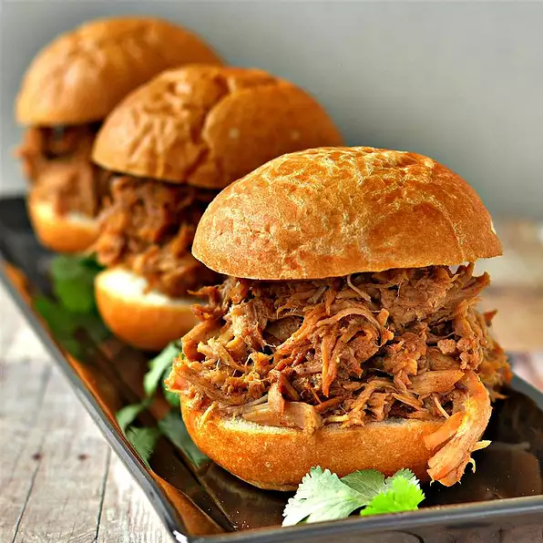

Dr. Pepper Pulled Pork

Ingredients
- 1 (4 pound) pork shoulder roast
- 2 tablespoons coarse kosher salt, or to taste
- 1 (12 fluid ounce) can or bottle Dr. Pepper
- 1 (4 fluid ounce) bottle liquid smoke flavoring, or to taste
- 4 cloves garlic
Directions
- Place pork roast in a slow cooker, rub with salt, and pour Dr. Pepper,
liquid smoke, and garlic over the top.
- Cook on Low for 8 to 10 hours.
- Remove pork to a bowl.
- Strain liquid through a fine-mesh strainer; reserve liquid.
- Add garlic cloves back to to pork.
- Shred pork using two forks.
- Add portion of liquid to shedded pork to desired moisture.
- Serve with your favorite BBQ sauce.
Other Recipes